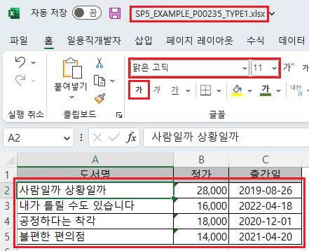
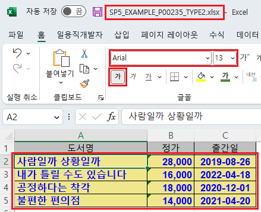
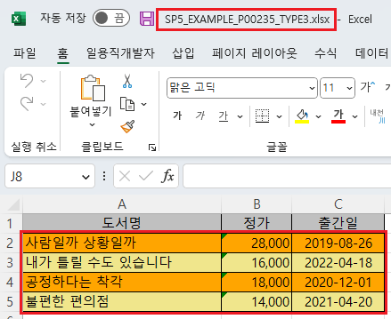

[GridView] 엑셀 다운로드 시 스타일 지정하기 - 바디(body)
1개요
GridView의 엑셀 다운로드(함수 'advancedExcelDownload') 옵션 중 바디의 스타일을 적용할 수 있는 옵션 설정의 예제입니다. 바디 스타일을 지정할 수 있는 옵션은 아래와 같습니다. - bodyColor : [default: #FFFFFF] Excel 파일에서 그리드의 body의 색 - bodyFontName : [default: 없음] Excel 파일에서 그리드의 body의 font name - bodyFontSize : Excel 파일에서 그리드의 body의 font size - bodyFontColor : [default: 없음] Excel 파일에서 그리드의 body의 font 색 - bodyFontBold : [default: 없음] Excel 파일에서 그리드의 body의 Bold 적용 유무 - oddRowBackgroundColor : [default: 없음] Excel 파일에서 그리드 body의 홀수 줄의 배경색 - evenRowBackgroundColor : [default: 없음] Excel 파일에서 그리드 body의 짝수 줄의 배경색
옵션 bodyColor, bodyFontName, bodyFontSize, bodyFontColor, bodyFontBold는 옵션 'useStyle'을 'false'로 지정해야 동작합니다.
2구현된 기능
엑셀 다운로드 - 기본 동작
엑셀 다운로드 - 바디의 스타일 적용
엑셀 다운로드 - 바디의 홀수행, 짝수행 배경색 적용
3예제 테스트 방법
다운로드된 엑셀 파일의 바디 영역의 스타일을 비교합니다.
3.1엑셀 다운로드 - 기본 동작
- STEP1. 초기 상태 확인하기
실행된 GridView를 확인합니다.
[브라우저(Chrome) 실행 예시]

- STEP2. 버튼 엑셀 다운로드 - 기본 동작을 클릭합니다.
엑셀 파일 "SP5_EXAMPLE_P00235_TYPE1.xlsx"이 다운로드 됩니다.
- STEP3. 실행된 결과를 확인합니다.
다운로드 된 엑셀 파일 'SP5_EXAMPLE_P00235_TYPE1.xlsx'을 실행합니다.
바디 영역의 스타일을 확인합니다.
(배경색, 글자체, 글자 크기, 글자색, 글자 굵게 적용 여부)
배경색을 제외한 나머지 설정은 엑셀에 설정된 기본 값으로 적용됩니다.
[다운로드된 엑셀(2021) 파일 예시]

3.2엑셀 다운로드 - 바디의 스타일 적용
- STEP1. 초기 상태 확인하기
실행된 GridView를 확인합니다.
[브라우저(Chrome) 실행 예시]
- STEP2. 버튼 엑셀 다운로드 - 바디의 스타일 적용을 클릭합니다.
엑셀 파일 "SP5_EXAMPLE_P00235_TYPE2.xlsx"이 다운로드 됩니다.
- STEP3. 실행된 결과를 확인합니다.
다운로드 된 엑셀 파일 'SP5_EXAMPLE_P00235_TYPE2.xlsx'을 실행합니다.
바디 영역의 스타일을 확인합니다.
- 배경색 : "#F0E68C"(Khaki)
- 글자체 : "Arial"
- 글자 크기 : "13"
- 글자색 : "#0000FF"(Blue)
- 글자 굵게 적용 : "true"
[다운로드된 엑셀(2021) 파일 예시]

3.3엑셀 다운로드 - 바디의 홀수행, 짝수행 배경색 적용
- STEP1. 초기 상태 확인하기
실행된 GridView를 확인합니다.
[브라우저(Chrome) 실행 예시]
- STEP2. 버튼 엑셀 다운로드 - 바디의 홀수행, 짝수행 배경색 적용을 클릭합니다.
엑셀 파일 "SP5_EXAMPLE_P00235_TYPE3.xlsx"이 다운로드 됩니다.
- STEP3. 실행된 결과를 확인합니다.
다운로드 된 엑셀 파일 'SP5_EXAMPLE_P00235_TYPE3.xlsx'을 실행합니다.
바디 영역의 스타일을 확인합니다.
- 홀수행 배경색 : "#F0E68C"(Khaki)
- 짝수행 배경색 : "#FFA500"(Orange)
[다운로드된 엑셀(2021) 파일 예시]

4구현 예시
4.1엑셀 다운로드 시 바디의 스타일 적용하기
- 원하는 시점에 엑셀 다운로드 스크립트를 작성합니다.
[소스 코드 예시]
//예제 파일의 스크립트 "scwin.btn_ex2_onclick"를 참고하세요. var jsnOptions; jsnOptions = { fileName: "SP5_EXAMPLE_P00235_TYPE2.xlsx", //엑셀의 파일명 useStyle : "false", //필수 지정 bodyColor : "#F0E68C", //바디의 배경색 - Khaki bodyFontName : "Arial", //바디의 글자체 bodyFontSize : "13", //바디의 글자 크기 bodyFontColor : "#0000FF", //바디의 글자색 - Blue bodyFontBold : "true" //바디의 글자 굵게 적용 }; //useStyle <String:N> [default: false] 다운로드시 css를 제외한, style을 excel에도 적용할 지 여부 (배경색,폰트) //bodyColor : <String:N> [default: #FFFFFF] Excel 파일에서 그리드의 body의 색 //bodyFontName : <String:N> [default: 없음] Excel 파일에서 그리드의 body의 font name //bodyFontSize : <String:N> Excel 파일에서 그리드의 body의 font size //bodyFontColor : <String:N> [default: 없음] Excel 파일에서 그리드의 body의 font 색 //bodyFontBold : <String:N> [default: 없음] Excel 파일에서 그리드의 body의 Bold 적용 유무 //GridView "grd_exam1"의 엑셀 다운로드 실행 grd_exam1.advancedExcelDownload(jsnOptions);
4.2엑셀 다운로드 시 바디의 홀수행, 짝수행 배경색 적용하기
- 원하는 시점에 엑셀 다운로드 스크립트를 작성합니다.
[소스 코드 예시]
//예제 파일의 스크립트 "scwin.btn_ex3_onclick"를 참고하세요. var jsnOptions; jsnOptions = { fileName: "SP5_EXAMPLE_P00235_TYPE3.xlsx", //엑셀의 파일명 oddRowBackgroundColor : "#F0E68C", //바디의 홀수행 배경색 - Khaki evenRowBackgroundColor : "#FFA500" //바디의 짝수행 배경색 - Orange }; //oddRowBackgroundColor : <String:N> [default: 없음] Excel 파일에서 그리드 body의 홀수 줄의 배경색 //evenRowBackgroundColor : <String:N> [default: 없음] Excel 파일에서 그리드 body의 짝수 줄의 배경색 //GridView "grd_exam1"의 엑셀 다운로드 실행 grd_exam1.advancedExcelDownload(jsnOptions);
5주요 API
- advancedExcelDownload( options , infoArr )
options.bodyColor
options.bodyFontName
options.bodyFontSize
options.bodyFontColor
options.bodyFontBold
options.oddRowBackgroundColor
options.evenRowBackgroundColor
6참고 문서
[웹스퀘어5 SP5 개발 가이드] GridView
링크 : https://docs1.inswave.com/sp5_user_guide/bc10c1b82c9a2a0b#e1c4658baf7e726f
[웹스퀘어5 SP5 개발 가이드] GridView → Excel 다운로드
링크 : https://docs1.inswave.com/sp5_user_guide/bc10c1b82c9a2a0b#9fb910628c27d550
[웹스퀘어5 SP5 개발 가이드] Excel 파일 스타일 설정
링크 : https://docs1.inswave.com/sp5_user_guide/bc10c1b82c9a2a0b#7a3bda36f7d0b2e6